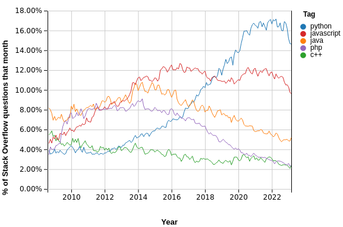

Python es un lenguaje de programación de alto nivel, de propósito general e interpretado con objetos, módulos, threads (hilos), excepciones y administración de memoria automática.
Es un lenguaje simple y fácil de aprender pero muy poderoso.
Hasta la fecha (abril de 2023) Python se mantiene como el lenguaje con mayor cantidad de consultas en la famosa plataforma Stack Overflow.
Entre las cualidades que lo hacen ser el más elegido podemos destacar:
El intérprete de Python es el programa que se encargará de traducir línea por línea nuestro programa a lenguaje de máquina para que el programa sea ejecutado por una computadora.
El intérprete puede ejecutar uno (o varios) archivos, generalmente con extensión .py o también puede ejecutarse en modo shell. En los siguientes enlaces puede encontrar intérpretes de Python online y gratuitos.
Hasta el momento hemos visto los siguientes conceptos poniéndolos en práctica con pseudocódigo.
A continuación veremos en sintaxis de Python a realizar cada una de las listadas.
Es muy sencillo definir variables en Python ya que al momento de la creación de la misma no es necesario especificar el tipo de datos, simplemente se le asigna un valor.
a = 86 # Es tipo int
b = 29.2 # Es tipo float
c = "Hola" # Es tipo str (string)
d = False # Es tipo bool
e = None # Es tipo NoneType (vacía)
Las comparaciones entre tipos serán las mismas vistas en la clase anterior.
Las operaciones de aritmética entre tipos serán las mismas vistas en la clase anterior.
Las constantes contienen datos igual que las variables. En principio la constante está diseñada para que el valor que tenga no cambie y se mantenga constante durante la ejecución del programa.
Sin embargo, en Python NO existen las constantes como tal. Ya que no dispone de un mecanismo para declararlas. Pero es posible "simular" el uso de las mismas.
La convención para nombrar constantes es hacerlo con el nombre todo en mayúsculas, de esta forma, aunque en realidad estemos trabajando con variables, quien esté trabajando con el programa, sabrá a simple vista que se trata de una constante y que no hay que reasignarle ningún valor.
CONSTANTE = "Un valor"
print(CONSTANTE)
Las "constantes" las debemos utilizar para contener datos que no tienen que variar, que siempre serán iguales, como por ejemplo, los días de una semana o las horas de un día.
MINUTOS_HORA = 60
HORAS_DIA = 24
DIAS_SEMANA = 7
Las constantes son una parte importante de la programación, y se utilizan para representar datos que no cambian en un programa. Su uso puede hacer que el código sea más legible, evitar errores y facilitar el mantenimiento del código. Es importante comprender el concepto de constantes para poder utilizarlas correctamente en la programación.
La instrucción imprimir() que vimos en las primeras clases, se reemplaza por la instrucción print()
print("Hola alumnos y alumnas")
print("Esto es una salida de texto a pantalla")
Hola alumnos y alumnas
Esto es una salida de texto a pantalla
La instrucción print() también puede imprimir en la misma línea agregando variables.
x = 86
print("El valor de x es:", x)
print("El valor de x es:" + str(x) )
print(f"El valor de x es: {x}")
El valor de x es: 86
El valor de x es:86
El valor de x es: 86
Las tres formas se pueden usar para imprimir texto y variables.
La "f" del tercer print que se agrega luego del primer paréntesis es para que el intérprete permita insertar variables entre llaves { } e imprima directamente el valor.
si/sino se remplaza por if/else respectivamente.
x = 86
y = 40
if (x > y):
print(f"x es mayor a y. ({x}>{y})")
else:
print(f"x NO es mayor a y. ({x}<={y})")
x es mayor a y. (86>40)
Observar el : luego del if y el else.
Recordar que el else, al igual que el sino es opcional.
En Python existe una sintaxis abreviada por si tenemos que usar un if seguido de un else.
if (x > y):
print(f"x es mayor a y. ({x}>{y})")
else:
if (x == y):
print(f"x es igual a y. ({x}={y})")
else:
print(f"x es menor a y. ({x}<={y})")
if (x > y):
print(f"x es mayor a y. ({x}>{y})")
elif (x == y):
print(f"x es igual a y. ({x}={y})")
else:
print(f"x es menor a y. ({x}<={y})")
El mientras() se remplaza por while()
while(True):
print("¡Hola alumnos y alumnas!")
¡Hola alumnos y alumnas!
¡Hola alumnos y alumnas!
¡Hola alumnos y alumnas!
... # Al infinito o que el programa se detenga
¡Hola alumnos y alumnas!
La instrucción vista, se le conoce como un loop infinito. Como la condición de corte del while siempre será True, el bloque del while se ejecutará siempre a menos que el programa termine, o se rompa el loop con una instrucción, por ejemplo con break o return.
El mientras() se remplaza por while()
x = 0
while(x < 5):
print(f"x ahora vale {x}. Se incrementará en 1")
x = x+1
print(f"Llegó a {x}")
x ahora vale 0. Se incrementará en 1
x ahora vale 1. Se incrementará en 1
x ahora vale 2. Se incrementará en 1
x ahora vale 3. Se incrementará en 1
x ahora vale 4. Se incrementará en 1
Llegó a 5
La estructura de repetición vista, es en realidad una iteración que va iterando sobre un elemento o cantidad de veces predefinidas. La instrucción que se usa es for. Si la queremos usar para repetir un número predeterminado de veces se usa así:
for i in range(4):
print(i)
Esta operación es muy interesante. Se usa una variable i (el nombre puede ser cualquiera) como una forma de representar el iterador, es para identificar por cual de las "veces" se está ejecutando. La salida será:
0
1
2
3
También es importante resaltar que siempre se arranca desde 0. Así que lo tenemos que tener muy en cuenta. Mas info sobre range()
Iteración en un string. En este caso iterará sobre cada letra.
for l in "Hola!":
print(l)
H
o
l
a
!
La instrucción for se usa para iterar sobre muchos objetos que permiten que se iteren sobre sí. Puede ver mas ejemplos en este enlace.
Al igual que lo visto en la clase pasada la instrucción que usa Python para ingresar datos por teclado es input().
print ("Ingrese un valor para x: ")
x = input()
y = input("Ingrese un valor para y: ") # Mas corta
Ingrese un valor para x:
34
Ingrese un valor para y: 34
Se puede usar el parámetro string del input como en print
x = 10
x = input(f"Ahora x={x}. Ingrese un valor remplazarlo: ")
print(f"Ahora x={x}")
Ahora x=10. Ingrese un valor remplazarlo: 32
Ahora x=32
Es muy importante saber que TODOS los datos ingresados por input, Python los asumirá como si fueran strings (str). Por lo tanto, si queremos manejar números debemos convertirlos.
Veamos un ejemplo
x = input("Ingrese un número para obtener su suma: ")
print(f"La suma x+x es {x+x}")
¿Qué imprime el programa si ingresamos el valor 89?
Ingrese un número para obtener su suma: 89
La suma x+x es 8989
¿Por qué pasa esto? Porque se trata de "sumar" dos string, pero eso da una concatenación.
Veamos otro ejemplo
x = input("Ingrese un número para obtener su cuadrado: ")
print(f"El cuadrado x*x es {x*x}")
¿Qué imprime el programa si ingresamos el valor 4?
TypeError: can't multiply sequence by non-int of type 'str'
Da un error y el programa se cierra. Dice que no se puede multiplicar un str.
Necesitamos hacer conversión de tipos.
| Tipo Destino | Instrucción | Ejemplo |
|---|---|---|
| int | int() |
y= int(x) |
| float | float() |
y= float(x) |
| string | str() |
y= str(x) |
Ejemplo suma corregido
x = int(input("Ingrese un número para obtener su suma: "))
print(f"La suma x+x es {x+x}")
La conversión de tipo se hace inmediatamente después del input. x ahora tiene un int.
Ingrese un número para obtener su suma: 89
La suma x+x es 178
Ejemplo cuadrado corregido
x = input("Ingrese un número para obtener su cuadrado: ")
print(f"El cuadrado x*x es {int(x)*int(x)}")
La conversión de tipo se hace en el print dentro de la operación.
Ingrese un número para obtener su cuadrado: 4
El cuadrado x*x es 16
Si hicieramos un print(x) ¿Qué valor daría?
Existen diversas funciones (métodos) para poder manipular strings, obtener información, transformación, etc.
Por ejemplo, pasar el string a mayúsculas, minúsculas, saber si es un número, etc. La lista es larga, pero péguele una mirada que le puede ser de mucha ayuda.
Métodos en Python para StringEscriba un programa en Python que imprima por pantalla ¡HOLA MUNDO!.
Utilice alguno de los intérpretes online vistos en clase.
Escriba un programa en Python que imprima tres veces por pantalla ¡HOLA MUNDO!.
Escriba un programa en Python que solicite al usuario ingresar su nombre e imprima un saludo, por ejemplo "¡Hola Cristian!".
Escriba un programa en Python que solicite al usuario ingresar dos números y devuelva la suma de ellos.